Layer 0：从四路残差到局部注意力与 MoE
1. Layer 0 总览
本文分析 DeepSeek-V4.1-Flash 的 Layer 0 文本前向路径，张量形状按完整逻辑维度表示。
表示 batch， 表示本次处理的 token 数， 表示合并后的 token 维。Attention 仍按各自会话计算。
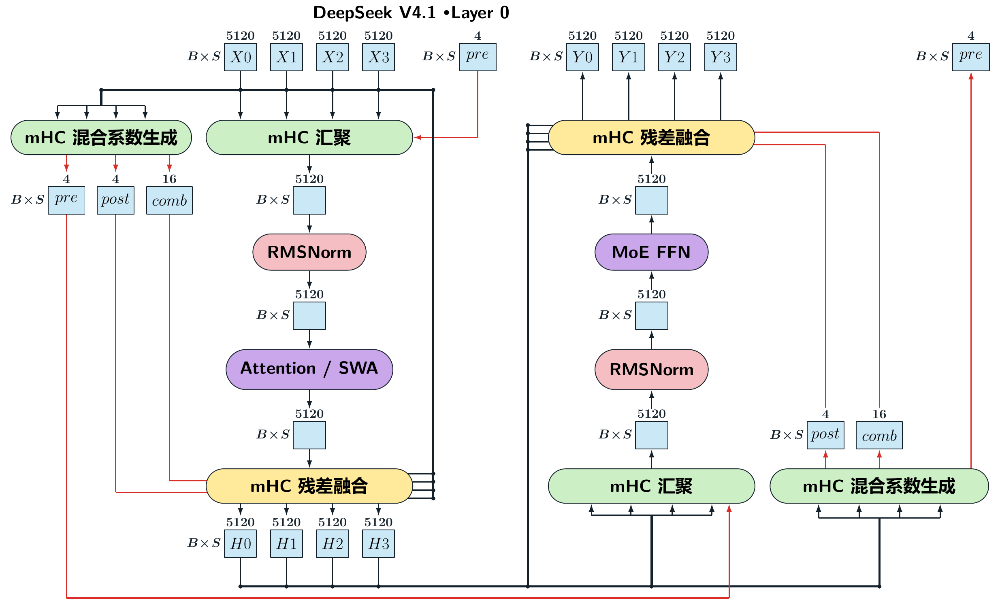
Layer 0 先计算 Attention，再计算 MoE；两个子层各有独立的一套 mHC。初始四路来自同一份 embedding，整体形状为 [BxS,4,5120]，首次 pre 为 [1,0,0,0]。
每个子层的流程为：
- 入口汇聚：四路残差汇成一路，同时由四路输入生成混合系数。
- 子层计算：单路输入
[BxS,5120] 经过 RMSNorm，再执行 Attention 或 MoE。
- 出口融合：子层输出与保留的原四路残差融合，恢复为
[BxS,4,5120]，交给下一子层。
混合系数生成分支读取当前子层的四路输入。生成的 post、comb 用于当前出口，pre 用于下一子层入口：Attention 侧的 pre 交给本层 MoE，MoE 侧的 pre 交给下一层 Attention。
2. mHC
2.1 四路输入生成 raw mixes
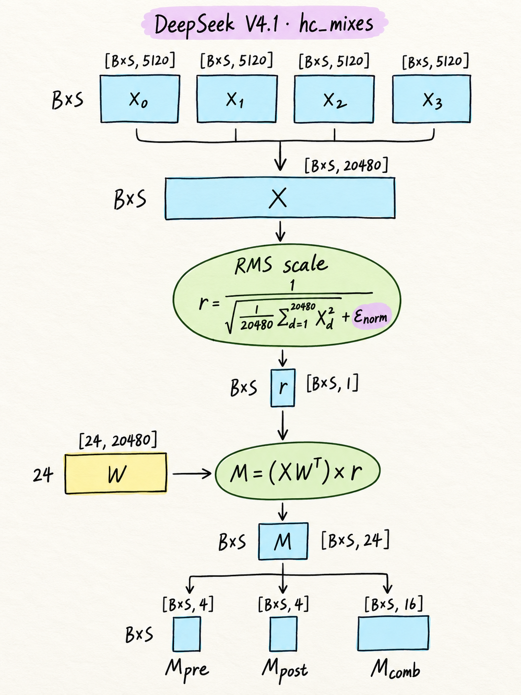
四路输入经过展平、RMS 缩放与联合投影，生成混合系数的原始值。以下 为展平后的 token 索引， 为特征元素索引， 表示逐元素相乘；线性权重按 [输出,输入] 排列。
计算分为三步：
展平：～ 沿 hidden 维拼接，每个 token 的 个元素组成 。
RMS 缩放：对每行的 个元素计算一个缩放因子，得到 ；这里没有可学习的缩放权重。
联合投影： 与权重 相乘，再按行乘 ，得到 。
按 拆成 、、，供下一步生成 、、；它们此时还是原始值。
提供投影内容， 按行广播，对投影结果逐行缩放。
2.2 生成 pre、post、comb
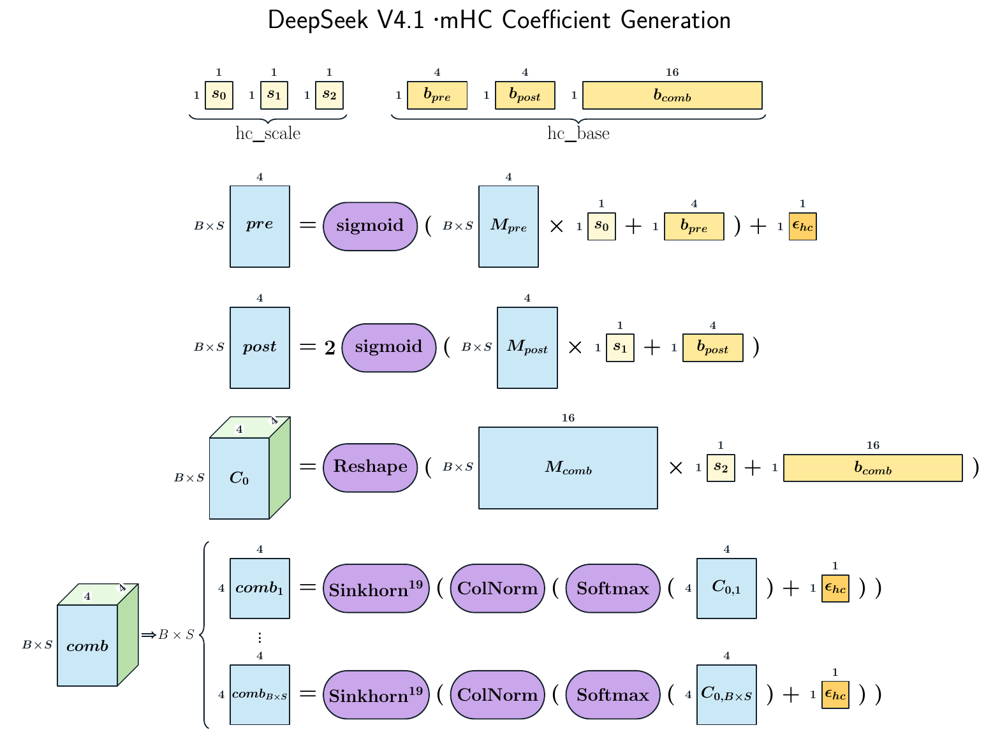
以及由它生成的 pre、post、comb 都是随输入变化的动态值。下面的 、 是训练得到的模型参数，对所有 token 共用；固定常数由算法给定。
|
中的三个缩放标量，分别用于三个分支 |
|
中的三组偏置，长度分别为 |
|
用于数值稳定的固定常数，不参与训练 |
为 Sigmoid：
生成 pre
输出 ：
生成 post
输出 ：
Sinkhorn
Sinkhorn 是行、列交替归一化的迭代方法，使正值矩阵的行和、列和接近 。在残差混合中，行对应旧残差流，列对应新残差流，分别约束每路分配出去和接收进来的混合系数总量。
对每个 token 的 工作矩阵 ，行、列归一化分别为：
其中，一次 Sinkhorn 迭代表示：
生成 comb
先得到 ：
将 重排为 。本配置 ：先做行 Softmax、逐项加 和首次列归一化，再执行 次 Sinkhorn 迭代，共完成 次列归一化：
最终输出 。
2.3 四路汇聚 hc_pre
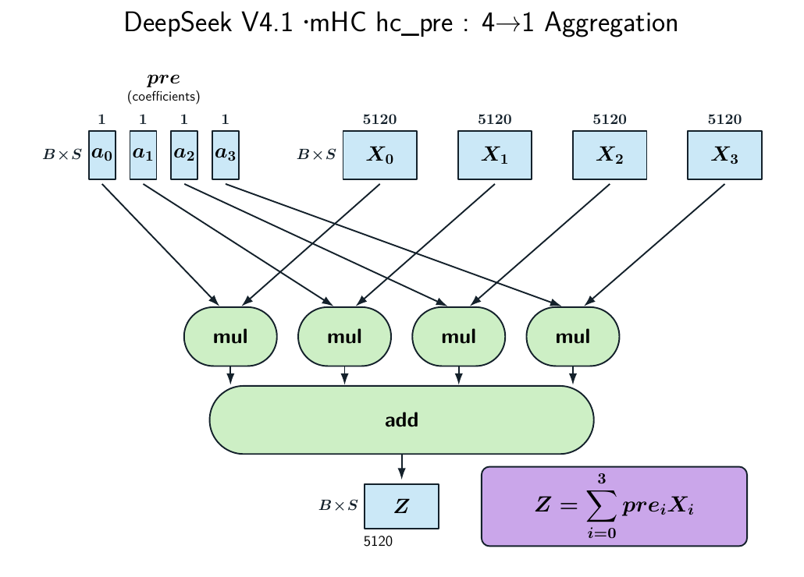
本次使用的 由上一子层生成；Layer 0 首次汇聚使用固定值 。四路残差分别乘以对应系数，再相加，得到单路输入 。
|
各为 ，表示四路残差 |
|
的四列，各按 使用 |
|
，表示汇聚后的单路输入 |
每个 token 的 作用于对应残差流的全部 个元素；求和只沿四路进行，保留 token 与 hidden 维度。
2.4 残差融合 hc_post
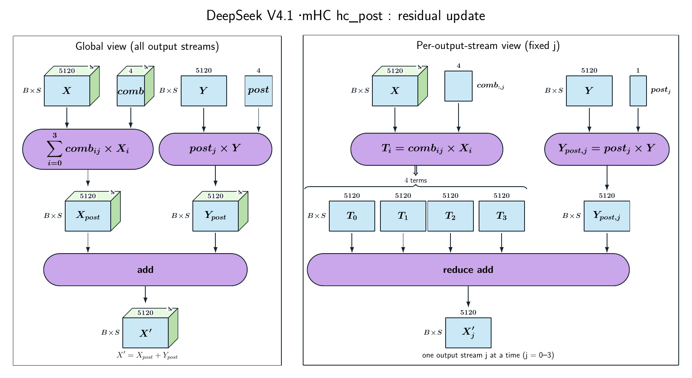
左侧展示四路输出的整体融合，右侧展开单个输出流 的计算，两侧表达的是同一个过程。
输入为保留的四路残差 和子层输出 ，使用当前子层生成的 与 。以下 、 分别表示旧、新残差流；、 分别表示 token 与特征元素。
- 旧残差混合：每个输出流 都接收旧四路的加权结果。 表示 token 的旧第 路到新第 路的系数。
- 子层输出写入：同一个 按各路的 系数加权，每个系数作用于该 token 的全部 个元素。
两条分支逐元素相加，恢复为四路：
2.5 参数量、计算量与 Required Global Memory 理论下界
以下先按一套 mHC统计，再按 Attention、MoE 两套汇总参数量和计算量。参数量、计算量中的 K、M 分别表示 、；存储量使用 Byte、KiB、MiB。
参数量
一套 mHC 的可学习参数包括联合投影矩阵 、偏置 和缩放系数 。四路汇聚和残差融合没有额外可学习参数，固定常数不计入参数量。
|
|
491,520 |
|
|
24 |
|
|
3 |
| 合计 |
— |
491,547 |
Layer 0 的两套 mHC 合计 983094（983.094K） 个参数。
计算量
仅统计 mHC 的前向算术运算，不含 Attention、MoE 本体，也不统计数据搬运和类型转换。
乘加列合计加法、减法和乘法，每次计 1 次；RMS 均值按乘以 计 1 次乘法。除法、exp、rsqrt、比较分别计数。下表为一套 mHC 处理一个 token 的计算量。
| RMS 缩放因子 |
|
|
rsqrt：1 次 |
| 联合投影 |
|
|
— |
| 投影结果缩放及偏置 |
|
|
— |
| pre、post 的 Sigmoid |
|
|
exp：8 次
除法：8 次 |
| pre 加 、post 乘 |
|
|
— |
| comb：行 Softmax 后加 |
|
|
比较：12 次
exp：16 次
除法：16 次 |
| comb：行列归一化，含首次列归一化 |
|
|
除法： 次 |
| 四路汇聚 |
|
|
— |
| 残差融合 |
|
|
— |
| 合计 |
— |
1,244,901 |
除法：648 次
exp：24 次
rsqrt：1 次
比较：12 次 |
将一套 mHC 的运算量乘以 ，得到每层 mHC 处理一个 token的官方通用路径计算量：
Layer 0 的首次 pre 虽然固定为 ，但固定 revision 的官方 reference 前向仍会创建 pre_mix:[B,S,4] 并调用通用 hc_pre，没有把它常量折叠成“直接取第 0 路”。因此整层汇总以 2,489,802 次加 / 减 / 乘为准。若某个优化实现做了这项折叠，才可省去首次汇聚的 次，降至 2,453,962 次。
| 加 / 减 / 乘 |
2,489,802 |
2,453,962 |
| 除法 |
1.296K |
1.296K |
| exp |
48 |
48 |
| rsqrt |
2 |
2 |
| 比较 |
24 |
24 |
处理 个 token 时，各项计算量按 倍计。
Required Global Memory 理论下界（理想融合口径）
以下按一套 mHC 的完整逻辑张量核算 Required Global Memory 理论下界。数据类型见下表：FP32 每元素 Byte，BF16 每元素 Byte；，。
将整个 mHC 作为一个逻辑分析单元，采用以下存储假设：
- Weight：模型参数长期保存在 Global Memory。
- I/O：完整输入、输出保存在 Global Memory，并分别计数。 从上一子层传入， 传给下一子层；不考虑与相邻模块进一步融合或复用输入、输出存储。
- Internal Activation：所有内部中间量（包括 、）假设可在 Shared Memory / Register 中保存和消化，不完整物化到 Global Memory。
Tensor 细节表
|
Weight |
|
FP32 |
|
模型加载 → 模型卸载 |
|
Weight |
|
FP32 |
|
模型加载 → 模型卸载 |
|
Weight |
|
FP32 |
|
模型加载 → 模型卸载 |
|
I/O：Input |
|
BF16 |
|
mHC 输入 → 当前 mHC 完成 |
|
I/O：Input |
|
FP32 |
|
上一子层传入 → 当前 完成 |
|
Internal Activation |
|
FP32 |
|
类型转换 / 归一化 / 投影阶段 |
|
Internal Activation |
|
FP32 |
|
归一化 → 投影 |
|
Internal Activation |
|
FP32 |
|
系数投影 → pre/post/comb 生成 |
|
I/O：Output |
|
FP32 |
|
当前系数生成 → 下一子层 完成 |
|
Internal Activation |
|
FP32 |
|
系数生成 → 当前 |
|
Internal Activation |
|
FP32 |
|
系数生成 → 当前 |
|
Internal Activation |
|
BF16 |
|
输出 → 子层计算 |
|
Internal Activation |
|
BF16 |
|
子层输出 → |
|
I/O：Output |
|
BF16 |
|
mHC 输出 → 下一逻辑模块 |
Global Memory 汇总表
按上述假设，仅汇总参数、输入和输出：
| Parameter |
|
|
| Input |
|
|
| Output |
|
|
| Required Global Memory |
Parameter + Input + Output |
|
空间公式
其中：
形状与类型依据：模型配置、模型前向实现、系数生成核。全文统一复核日期：2026-10-14。
3. 两个入口 RMSNorm
Layer 0 有两套互不共享参数的入口 RMSNorm：一套位于第一次 hc_pre 与 Attention 之间，另一套位于第二次 hc_pre 与 MoE 之间。两次输入都是四路汇聚后的单路张量，shape 均为 [B,S,5120]；记 ，以下先分析其中一套。
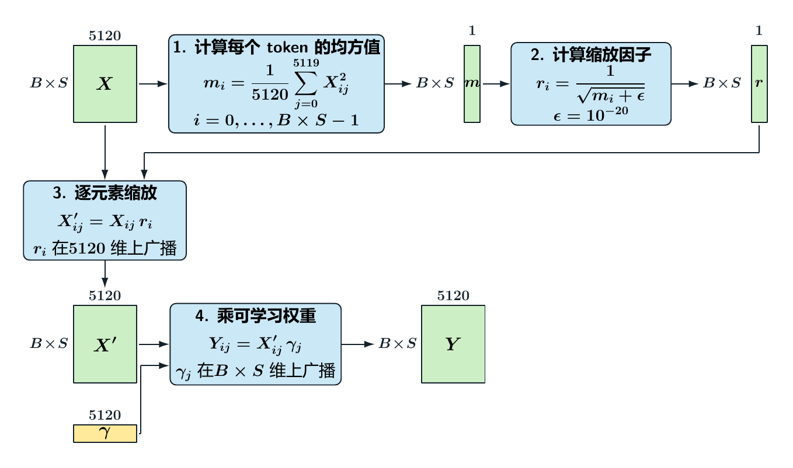
3.1 四步前向计算与精度
图中用 表示入口张量、 表示输出；对应前文符号时，就是 、。参考实现先记住输入 dtype，再把计算提升到 FP32：
第一步，对每个 token 独立计算 5120 维上的均方值，不减均值：
第二步，加固定常数 ，再计算动态缩放因子：
第三步把 沿特征维广播，完成逐元素归一化；第四步乘可学习权重 ：
最后把 转回输入 dtype。当前参考推理路径的输入、输出和 为 BF16，均方、rsqrt、归一化及权重缩放在 FP32 表达中完成。 是唯一的可学习参数，没有 bias； 是固定常数，不计入参数量。核查：固定 revision 的 RMSNorm
3.2 参数量与前向计算量
一套 5120 维 RMSNorm 只有一个缩放向量：
|
[5120] |
5,120 |
10,240 B（10 KiB） |
Attention 前和 MoE 前各有一套独立的 ，所以 Layer 0 的两个入口 RMSNorm 合计 10,240 个逻辑参数、20 KiB 权重。
下面给出一套 RMSNorm 处理一个 token 的算法级标量运算数。加法和乘法各计 1 次；均值中的除以 5120 按一次常数乘法计；rsqrt 单列，dtype 转换不计：
| 平方、求和、乘 、加 |
|
1 |
|
5,120 |
0 |
|
5,120 |
0 |
| 一 token 合计 |
20,481 |
1 |
因此一套处理 个 token 时：
Layer 0 两套合计：
这是按数学步骤统计的运算量，不等同于 GPU 指令数或执行时间；实际 kernel 会融合归约、广播和逐元素乘法。
3.3 张量生命周期与 Required Global Memory 理论下界（理想融合口径）
一套 RMSNorm 的逻辑张量如下。内部 FP32 张量用于说明计算与上界，不代表实现必须把它们完整写入 Global Memory：
|
Weight |
[5120] |
BF16 |
10,240 |
|
Input |
[N,5120] |
BF16 |
|
|
Internal |
[N,5120] |
FP32 |
|
|
Internal |
[N,1] |
FP32 |
|
|
Internal |
[N,1] |
FP32 |
|
|
Internal |
[N,5120] |
FP32 |
|
|
Output |
[N,5120] |
BF16 |
|
若只统计参数、输入和输出，并假设融合/tiling 让 停留在寄存器或共享内存，一套 RMSNorm 的 Required Global Memory 理论下界为：
Layer 0 的两套 会同时随模型驻留，合计 20 KiB；但两次 RMSNorm 按执行顺序发生，输入/输出工作区可以复用。因此仅就这两个 Norm 自身并按理想复用计算，最低同时驻留量是：
这不是进程峰值显存，也不是显存读写流量；框架上下文、allocator 保留区、kernel workspace 和未融合的 FP32 中间量都可能提高实测值。
3.4 与 LayerNorm、mHC RMS 因子的区别
- RMSNorm 只按平方均值缩放，不减均值，也没有 LayerNorm 的可学习偏置 。
- 本节入口 RMSNorm 沿单路 维统计，并乘独立的 。
- 第 2 节 mHC 的 RMS 因子沿四路展平后的 维统计，只服务于动态系数投影，没有独立的 。
两套入口 Norm 的位置和调用顺序可直接在 Block.forward 中看到：hc_pre → attn_norm → Attention，随后是 hc_pre → ffn_norm → MoE。核查：固定 revision 的 Block
4. 局部 Attention / SWA
这一节沿用 mHC 部分的展开方式：先逐步跟踪张量，再给公式与显存账。记 ，窗口宽度 ；输入 已经过 Attention 入口 RMSNorm。
4.1 生成 Q、共享 KV 与局部窗口
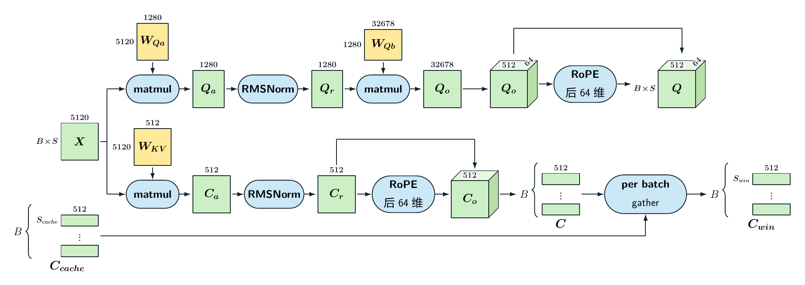
Q 与 KV 两条支路读取同一个 ：
| Q 降维 |
|
[N,1280] |
| Q 归一化 |
独立 RMSNorm， |
[N,1280] |
| Q 展开 |
，分成 64 头 |
[B,S,64,512] |
| 共享 KV 投影 |
|
[N,512] |
| 共享 KV 归一化 |
独立 RMSNorm， |
[B,S,512] |
每个头只有最后 维参加 RoPE，前 维直通。对一对实数分量 ，旋转写为：
于是：
第 0 层使用基数 的 RoPE； 个 Query 头共享同一份 。推理时，每个会话只保留最近 个 KV。令 为本轮开始前已有的缓存长度，则概念上的窗口长度和窗口内容可写成：
这里的 是便于理解的逻辑视图，不是实现必须物化的新张量。上游实现用 topk_idxs 直接索引交给 attention kernel 的 KV：prefill 索引当前序列 ，同时把末尾 KV 写入环形 window_kv_cache；decode 再按从旧到新的顺序索引该缓存的 128 个槽。prefill 为每个 Query 生成至多 个因果索引，无效槽填 -1。即使此时概念上的 ，下一步的窗口 mask 仍保证单个 Query 最多只参与 128 个 KV。核查：固定 revision 的 Attention._window_kv、get_window_topk_idxs
4.2 SWA mask、attention sink 与在线 softmax
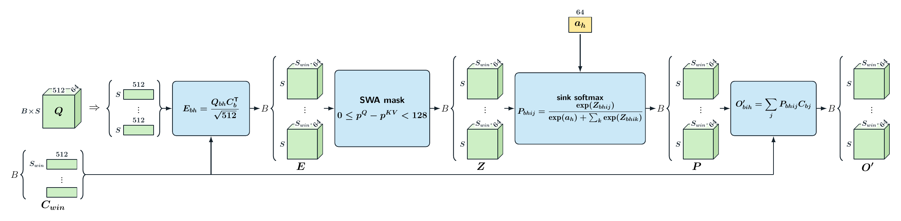
固定会话 、Query 头 和 Query 位置 。令当前内核实际遍历的候选数为 ；prefill 时 ，decode 时为 。对候选 KV 位置 ，原始得分为：
与 分别表示 Query 和 KV 的绝对位置。128-token 因果滑窗的 mask 为：
因此每个 Query 只访问自身及此前最多 个位置；在完整序列示意中，就是主对角线及其下方 127 条对角线。
每个头还有一个可学习 sink logit 。它只进入 softmax 分母，不携带 value 内容。直接形式为：
在数学上，可以把 sink 当成一个“无 value 的额外 logit”，并统一取最大值：
于是可写成：
上式是便于推导的稳定等价形式，不是官方 kernel 对 max 的逐行复述。固定 revision 的 sparse_attn_kernel 实际只对真实 KV score 维护 running max：
处理完所有 KV block 后，它再把 加入分母，并用该分母归一化累计输出。换言之，sink 不参与 kernel 的 running-max 更新，但数学结果与上面的直接定义一致。
因为 sink 吸收了部分概率质量，真实 token 的权重和满足 ，而不是强制等于 1。内核以 FP32 累积真实 score 的最大值、指数和及输出，再写回 BF16；、、 都只是逻辑上的分块，不会完整落到全局显存。核查：固定 revision 的 sparse_attn_kernel
| Q |
[B,S,64,512] |
BF16 |
| 窗口 KV |
[B,K_idx,512] |
由索引从环形缓存 gather |
topk_idxs |
[B,S,K_idx] |
INT32，-1 表示无效槽 |
|
[B,S,64,K_idx] |
FP32 分块 / 在线计算，不完整物化 |
|
[B,S,64,512] |
BF16 |
4.3 逆 RoPE 与两级分组输出投影
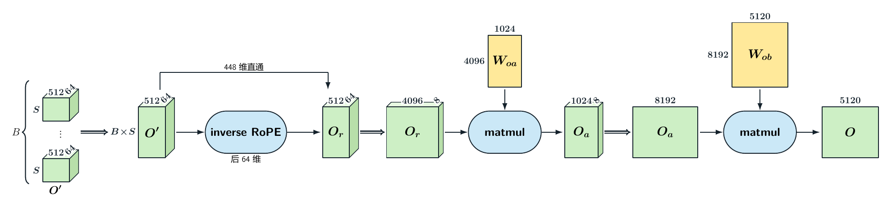
先按当前 Query 位置撤销每个头最后 维的旋转。逆变换等价于使用共轭频率，即 ：
随后把 个头分成 组，每组 个头：
第一级由 8 组独立权重完成：
第二级先把 8 组展平为 维，再合并回模型宽度：
完整形状链为：
两级之间没有额外非线性。最终单路输出 交给当前 Attention 侧的 mHC 融合。核查：固定 revision 的 Attention.forward
4.4 前向计算量
下面统计数学前向中的标量加法、减法和乘法；量化/反量化、数据搬运、索引与 dtype 转换不计。RoPE 的每个二维旋转按 4 次乘法和 2 次加 / 减统计。对 token ，令
因果窗口始终包含 Query 自身，所以 。各部分的一 token 计数为：
| 投影 |
13,105,920 |
| 1280 维 RMSNorm |
5,121 |
| 投影 |
83,853,312 |
| 投影 |
5,242,368 |
| 512 维 RMSNorm |
2,049 |
| Q RoPE、KV RoPE、输出 inverse RoPE |
24,768 |
| 64 头 score 点积与缩放 |
|
| Sink Softmax 的 score/sink 平移与分母求和 |
|
| 加权汇总 |
|
| 8 组 投影 |
67,100,672 |
| 投影 |
83,880,960 |
| 合计 |
|
其中 的每个输出分量使用 次乘法和 次加法；这解释了常数项中的 。因此处理 个 token 时：
这个公式按数学上的 Sink Softmax 与 两步统计，不等同于分块 online-softmax kernel 的实际指令数。两次内部 RMSNorm 另有 次 rsqrt；softmax 的 exp、除法、比较以及 kernel 为 running max 重标定累计量的操作，也没有混入主公式。
4.5 参数量与 Required Global Memory 理论下界（理想融合口径）
先区分两个口径：逻辑参数量统计模型中有多少个标量；驻留字节数按参考实现实际的 GPU dtype 和 FP8 scale 计算。SWA 的逻辑参数量仍是第 6 节汇总所用的 126,617,408：
|
[1280,5120] |
6,553,600 |
|
[1280] |
1,280 |
|
[32768,1280] |
41,943,040 |
|
[512,5120] |
2,621,440 |
|
[512] |
512 |
| sink |
[64] |
64 |
|
[8,1024,4096] |
33,554,432 |
|
[5120,8192] |
41,943,040 |
| 合计 |
|
126,617,408 |
参考实现默认 FP8 权重使用 E4M3 数据与按 block 存放的 E8M0 scale；两个 RMSNorm 权重为 BF16，sink 为 FP32， 为 BF16。对应驻留字节为：
|
FP8 + E8M0 scale |
6,560,000 |
|
BF16 |
2,560 |
|
FP8 + E8M0 scale |
41,984,000 |
|
FP8 + E8M0 scale |
2,624,000 |
|
BF16 |
1,024 |
| sink |
FP32 |
256 |
|
BF16 |
67,108,864 |
|
FP8 + E8M0 scale |
41,984,000 |
| 参数与 scale 合计 |
|
160,264,704 B（约 152.84 MiB） |
令 为预分配最大 batch， 为 RoPE 表覆盖的最大位置。持续状态还包括 BF16 window_kv_cache:[B_max,128,512]，占 字节；以及 freqs_cis:[S_max,32] 的 Complex64 表，占 字节。最后的 32 来自 个实数 RoPE 维两两组成复数。
若只计算该 SWA 模块完成一次前向所必需的 Global Memory，并假设理想融合/tiling 让 Q、分数、概率和中间投影停留在寄存器或共享内存，则需要长期保留的动态张量只有 BF16 输入与输出，各占 字节。因此 Required Global Memory 理论下界为：
这不是进程实际峰值显存：它不包含框架上下文、allocator 保留区、kernel workspace，也不要求完整物化下面这些中间量：
| 或 |
BF16 |
|
| 或 |
BF16 |
|
|
BF16 |
|
topk_idxs:[B,S,K_idx] |
INT32 |
|
| 、 或 |
FP32 |
每个 |
|
BF16 |
|
当前参考路径先对 做原地 FP8 量化—反量化模拟，再把结果以 BF16 写入窗口缓存；因此这里按 BF16 cache 计数。freqs_cis 在单层只计一次；虽然相同 RoPE 配置的层理论上可以共享该只读表，固定 revision 的构造器仍为每层分别注册 buffer，整模型实测不能未经验证就按共享扣减。核查：固定 revision 的 Attention、act_quant(inplace=True) 与 sparse_attn
5. MoE 前馈计算
这一节继续沿用前文的展开方式：先跟踪 Router、专家参数索引和专家计算，再核算参数、计算量与 Required Global Memory 理论下界。记
输入 已经过 MoE 入口 RMSNorm。每个 token 从 个 routed experts 中选择 个，同时无条件执行 个 shared expert；所有专家都是无投影偏置的截断 SwiGLU。
5.1 Router：Top-6 选择与路由权重
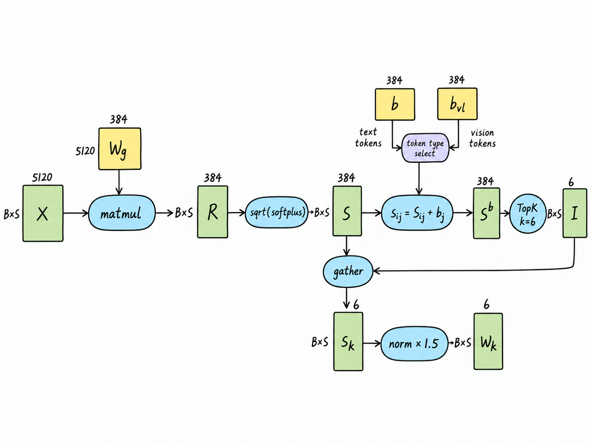
Router 先用 计算 logits。参考实现把输入和 转成 FP32 后再执行这次投影；本配置温度 ：
对 token ，文本路径使用 ，图像 span 内的 token 使用 ：
先用加修正量后的分数选专家：
但修正量只改变入选次序，不进入最终数值权重。根据 回到原始正分数 gather，再归一化并乘 route_scale=1.5：
因此每个 token 的六个路由权重之和约为 ；分母中的 是路由归一化常数。核查：固定 revision 的 Gate、模型配置
5.2 专家参数池与逻辑 gather
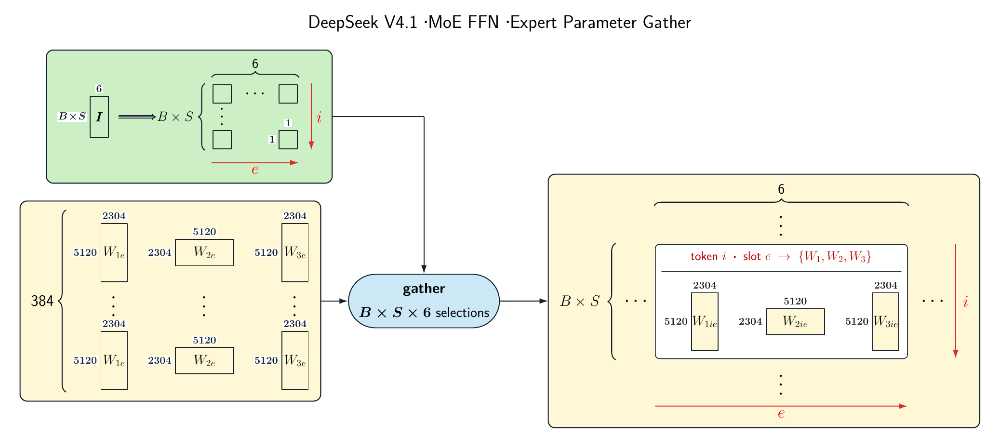
全局 routed expert 各有三组独立参数，统一按 PyTorch 的 [输出,输入] 存储顺序写为：
对 token 的第 个 selected slot：
图 11、图 12 黄色矩阵旁的尺寸采用行向量乘法视角 [输入,输出]，所以写作 或 ；正文则始终采用参数存储视角 [输出,输入]，计算时显式写转置。两种标法描述的是同一组矩阵。
这里的 gather 是逻辑索引关系，不表示为每个 token 复制六份完整参数。参考实现反过来按 expert id 统计 token 数，用 where(indices == expert_id) 收集属于该专家的 token，再批量调用一次 expert。多卡时 个 routed experts 按 rank 切分，各 rank 计算自己的局部专家后对 FP32 输出累加器做 all_reduce；shared expert 在各 rank 本地执行。核查：固定 revision 的 MoE
5.3 六个 routed experts 与一个 shared expert
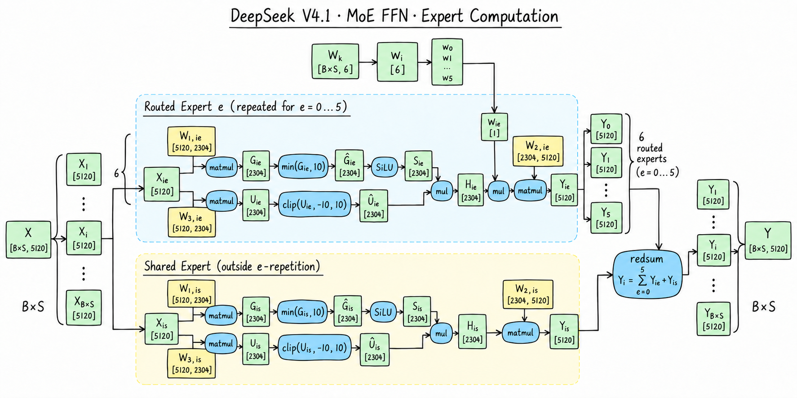
对 token 的第 个已选 routed expert，先计算两条输入投影：
Gate 支路只裁剪上界，Up 支路裁剪上下界：
随后执行 SwiGLU。参考实现先在 FP32 中乘路由权重，再转回输入 dtype 进入 ：
shared expert 使用同一结构和独立的 ，但不参加 Top-K，也不乘路由权重：
六个 routed 输出在 FP32 累加器中相加，再加 shared 输出，最后转回输入 dtype：
原始交付图曾把两处 Gate 上限误写为 ；图 12 已依据官方 clamp(gate,max=10) 修正为 ，其余结构保持不变。核查：固定 revision 的 Expert
5.4 参数量
| Router |
[384,5120] |
1,966,080 |
| 文本 / 视觉修正量 |
各 [384] |
768 |
| 384 个 routed experts 的 |
每个 expert 共 |
13,589,544,960 |
| 1 个 shared expert 的 |
|
35,389,440 |
| 合计 |
— |
13,626,901,248 |
一个 expert 的逻辑参数量为：
整个 MoE 为：
每个 token 虽然只执行 个专家，但 Router 仍要计算全部 个分数；“激活参数量”也不能直接当成单 token 的实际显存读量，因为同一 expert 的权重会在分配给它的一批 token 间复用。
5.5 前向计算量
下面统计数学前向：加法、减法和乘法各计 1 次；exp、log、sqrt、除法、比较和 Top-K 单列；不计量化、反量化、数据搬运、参数索引、expert dispatch 和通信。SiLU 按 展开；实际 kernel 可以融合这些逐元素步骤。
| Router 投影 |
3,931,776 |
— |
| Sqrt-Softplus |
384 |
exp：384；log：384；sqrt：384 |
| 修正量与 Top-6 归一化 |
396 |
除法：6；TopK：1 次；混合文本/视觉时条件选择：384 |
| 1 个 routed expert |
70,780,672 |
exp：2,304；除法：2,304；Clamp 比较：6,912 |
| 6 个 routed experts |
424,684,032 |
exp：13,824；除法：13,824；Clamp 比较：41,472 |
| 1 个 shared expert |
70,778,368 |
exp：2,304；除法：2,304；Clamp 比较：6,912 |
| 7 路输出汇聚 |
30,720 |
— |
| 一 token 合计 |
499,425,676 |
exp：16,512；log：384；sqrt：384；除法：16,134；显式 Clamp 比较：48,384；TopK：1 次 |
其中，单个 routed expert 的三次矩阵投影占绝大部分：
加上 SiLU、门控乘法和路由缩放后是 次加 / 减 / 乘；shared expert 少 次路由缩放，得到 。因此处理 个 token 时：
其余按 线性放大；Top-K 内部比较次数取决于实现，未伪装成固定常数。纯文本调用不传 image_mask 时，文本/视觉条件选择也可省略。
5.6 权重存储与 Required Global Memory 理论下界（理想融合口径）
这里同时区分逻辑参数量和实际驻留字节。按官方参考配置：Router 的 为 BF16，两个修正量为 FP32；routed experts 使用两个 FP4 值打包为 1 Byte，并沿 K 维每 32 个元素保存 1 个 E8M0 scale；shared expert 使用 FP8 权重和 的 E8M0 scale。
| Router |
BF16 |
3,932,160 |
|
FP32 |
3,072 |
| Routed pool |
FP4 packed + E8M0 scale |
2,406,481,920 |
| Routed pool |
FP4 packed + E8M0 scale |
2,406,481,920 |
| Routed pool |
FP4 packed + E8M0 scale |
2,406,481,920 |
| Shared |
FP8 + E8M0 scale |
35,424,000 |
| 参数与 scale 合计 |
— |
7,258,804,992 B（7.259 GB / 6.760 GiB） |
以 routed expert 的一组 矩阵为例：
所以 个 routed experts 的三组矩阵合计：
用于理解生命周期的主要逻辑张量如下；“若完整物化”不表示参考实现一定这样保存：
|
Input |
[N,5120] / BF16 |
|
|
Internal |
各 [N,384] / FP32 |
每个 |
|
Internal |
[N,6] / INT64 |
|
|
Internal |
[N,6] / FP32 |
|
| Routed 中间量 |
Logical Internal |
各 [N,6,2304] / FP32 |
每个 |
| Routed 输出 |
Logical Internal |
[N,6,5120] / BF16 |
|
| Routed 累加器 |
Internal |
[N,5120] / FP32 |
|
| Shared 输出 |
Internal |
[N,5120] / BF16 |
|
|
Output |
[N,5120] / BF16 |
|
若只统计 world_size=1 下完整参数池、输入和输出，并假设 Router、expert dispatch、矩阵分块与 reduce 的中间量不完整落到 Global Memory，Required Global Memory 理论下界为：
即约 ；若把调用方持有的 BOOL image_mask:[N] 也归入本模块，再增加 Byte。该式不是进程峰值显存，也不是每步显存流量；未融合激活、allocator、grouped-GEMM workspace 与通信缓冲都会提高实测值。
若以 个 rank 做 expert parallel，且 可被 整除，则 routed 参数池按 rank 等分，而 Router 与 shared expert 在参考实现中保留于每个 rank。仅参数与 scale 的单 rank 口径为：
FP4 的 [out,in/2] 打包与 [out,in/32] E8M0 scale 形状可在官方 Linear 与 fp4_gemm 中直接核查。核查：固定 revision 的 Linear、fp4_gemm
6. Layer 0 整层汇总：参数、计算、显存与状态
本章不重复前面的模块推导，只把固定 revision 下的 Layer 0 文本路径结算到同一口径。记 。
6.1 整层输入、输出与执行顺序
Layer 0 的外部输入为：
其中四路 由 embedding 复制得到，make_identity_pre_mix 实际创建 FP32 的 。层内顺序为：
最终输出：
pre_next 是本层 MoE 侧 mHC 生成的动态运行时状态，供 Layer 1 的 Attention 入口汇聚使用，不是模型参数。配置中 Layer 0 的 compress_ratio=0，且它不在 kv_source_layers、index_source_layers 或 engram_layer_ids 内，所以本层没有 compressed/global KV、Indexer 或 Engram 路径。
6.2 整层逻辑参数量与 GPU 驻留字节
下表包含当前文本路径不使用、但仍属于 Layer 0 参数的 bias_vl；不含 embedding、输出头和运行时状态。逻辑参数量统计标量个数，GPU 驻留字节则纳入 FP4 / FP8 打包、BF16 / FP32 以及量化 scale：
| Attention、MoE 两套 mHC |
983,094 |
3,932,376 B |
| 两个入口 RMSNorm |
10,240 |
20,480 B |
| Local Attention / SWA |
126,617,408 |
160,264,704 B |
| MoE FFN |
13,626,901,248 |
7,258,804,992 B |
| Layer 0 合计 |
13,754,511,990 |
7,423,022,552 B |
每个 token 只执行 6 个 routed experts 和 1 个 shared expert；这不会减少完整专家池的常驻参数字节。
6.3 整层前向计算量
沿用各模块“数学前向的标量加、减、乘”口径：
| 两套 mHC：官方通用路径 |
2,489,802 |
| 两个入口 RMSNorm |
40,962 |
| Local Attention / SWA |
|
| MoE FFN |
499,425,676 |
| Layer 0 合计 |
|
这里
因此官方通用路径为：
若优化实现把 Layer 0 首次 identity-pre 常量折叠，才可减去 ：
后一个值是理论优化值，不是固定 revision 官方 reference 当前执行的路径。exp、log、sqrt、rsqrt、除法、比较和 Top-K 仍按各模块章节单列，不在整层主公式中重复相加。
6.4 整层 Required Global Memory 理论下界（理想融合口径）
本节只统计参数与 scale、完整层边界 I/O、本层持久缓存及 RoPE 表；假设层内中间激活可融合、分块或复用，不完整物化到 Global Memory。
外部输入占：
输出 与 同样占 Byte。Persistent Runtime Storage 包括：
所以：
即：
官方 reference 会物化 ；若某个优化实现把 identity-pre 连同首次 hc_pre 一并常量折叠，边界存储可再减少 Byte。freqs_cis 在本层只计一次；相同 RoPE 配置的层理论上可以共享该只读表，但固定 revision 的 Attention 构造器仍为每层分别注册 buffer，整模型实测不能未经验证就按共享扣减。本式不是进程峰值显存，也不是每步显存读写量；未融合激活、allocator 保留区、kernel / grouped-GEMM workspace、dispatch 与通信缓冲都会增加实测值。
6.5 本层状态与跨层输出
| 四路残差 |
[N,4,5120] |
BF16 |
下一层 Attention 侧 mHC |
|
[N,4] |
FP32 |
下一层 Attention 入口汇聚 |
window_kv_cache |
[B_max,128,512] |
BF16 |
本层后续 decode；环形保留最近 128 个 token |
freqs_cis |
[S_max,32] |
Complex64 |
本层 RoPE / inverse RoPE 的只读 buffer |
Layer 0 不产生 compressed/global KV、Indexer 状态或 Engram 状态。四路残差与 pre_next 是层间运行时状态；local KV cache 与 RoPE 表是随模块驻留的 non-persistent buffer。
6.6 本层结论
- 参数与常驻显存主要由 MoE 决定。 Layer 0 的 13.755B 逻辑参数和约 6.913 GiB 参数驻留量，绝大部分来自 384 个 FP4 routed experts。
- 单 token 算术量主要来自 Expert FFN 与 Attention 投影。 mHC 和入口 RMSNorm 占比较小，但负责四路残差组织和数值稳定。
- 本层 Attention 历史状态较小。 Layer 0 只保留 128-token local KV，不包含 compressed/global KV；更早历史由后续带压缩分支的层处理。
7. 资料来源与版本说明
本文分析对象为 DeepSeek-V4.1-Flash，数学关系与维度依据以下上游资料：
- 模型配置
- 模型前向实现：RMSNorm、Attention、Gate、Expert、MoE、Block 与 Transformer。
- 算子数学细节：hc_split_sinkhorn、窗口索引与 sparse_attn。
全文已于 2026-10-14 统一对照固定 revision 5254448103b6254fc646dacbca1cbbf20e9216c1 复核；同日 Hugging Face 模型 API 返回的 main SHA 也为该 revision。后续上游更新不会自动改变本文的分析基准。图示用于辅助理解，精确维度、dtype、存储方式与是否物化以相邻正文为准。